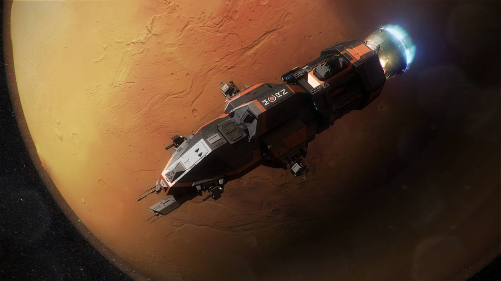

Books

Leviathan Wakes – Frank Herbert
★★★★★
My favorite modern sci-fi book. Great characters, solid writing, and
absolutely fantastic world-building. As an engineer, I appreciate the hard sci-fi (science fiction that
tries to be as realistic as possible) elements of the setting.
Modern
Favorite
Action
Movies

Alien
★★★★★
The first time I watched this was in my freshman year dorm with my friends.
It seemed so absurd that I, being obsessed with science fiction, had never watched it. I'm glad I did. It
was scary, it was campy, and it was fun!
Classic
Horror
Favorite
Shows

The Clone Wars
★★★★★
Me and my dad started watching this the summer after I graduated high school. It was an easy casual watch at night after both of us had been busy all day. Since it is a children's show, a lot of the lack of nuance in characterization can be forgiven. Overall, a very fun show if you can turn your brain off.
Cartoon
Lighthearted
Father-Approved